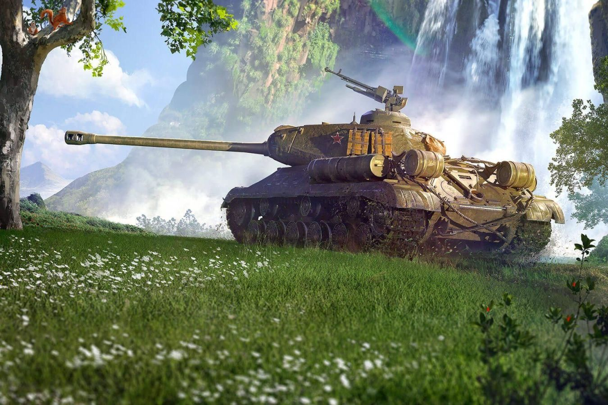

Начало возрождения эпохи тех самых танков! WoTLegacy — это игра, возвращающая в те года, когда была трава зеленее, а квас как танк в игре!
Пока доступна 1 карта — Малиновка. В вашем распоряжении 3 танка на выбор:
• МС-1
• LTraktor
• T1
Скоро релиз игры — следите за новостями!